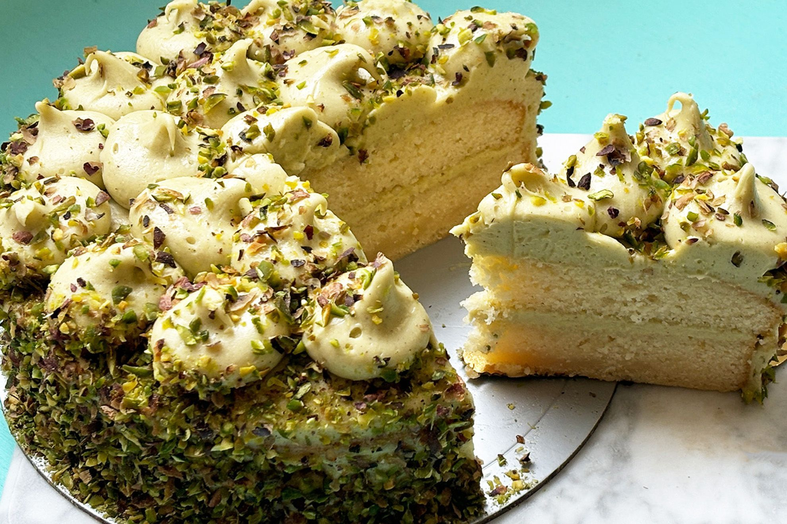

The history of pistachio cake is a fascinating culinary journey that follows two distinct paths, beginning in the ancient world and being dramatically reinvented in 20th-century America. The story begins in the Middle East and Persia, where the pistachio nut has been a prized delicacy for thousands of years. Long before modern leavened cakes existed, pistachios were ground to form the base of dense, rich sweets, often flourless and sweetened with honey or aromatic syrups. These early desserts established a luxurious flavor profile, frequently infused with complementary notes of cardamom, saffron, and rosewater, a tradition still seen in regional pastries like baklava.
While the flavor of pistachio has been cherished for millennia, the fluffy, light-green dessert widely known as pistachio cake today is a much more recent, and uniquely American, creation. Its popularity exploded in the mid-1970s, born from the post-war boom in convenience foods. This modern incarnation was made possible by combining two key products: a simple boxed cake mix and, most importantly, Jell-O's newly introduced Pistachio Instant Pudding mix. This combination produced an exceptionally moist and tender cake with a distinctive, bright green color and a sweet, nutty flavor that captivated home bakers. The recipe quickly became a cultural touchstone, famously earning the nickname "Watergate Cake" due to its rise in popularity during the political scandal of the same name. This version, often including chopped nuts and a whipped topping frosting, became a staple at potlucks and family gatherings across the nation.
In recent years, the pistachio cake has come full circle, experiencing a contemporary renaissance that honors its artisanal roots. Chefs and bakers are now moving away from mixes to create "from-scratch" versions that celebrate a more authentic flavor. By using real ground pistachios, these modern cakes have a subtler, more natural hue and are often paired with sophisticated, global flavors like citrus, white chocolate, or even the traditional rosewater, blending the convenience of its American past with the luxuriousness of its ancient origins.